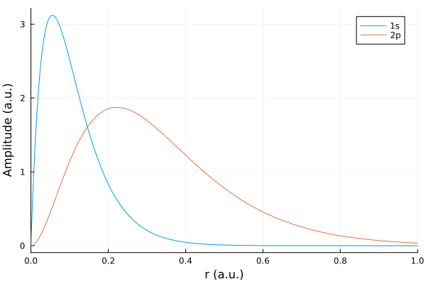
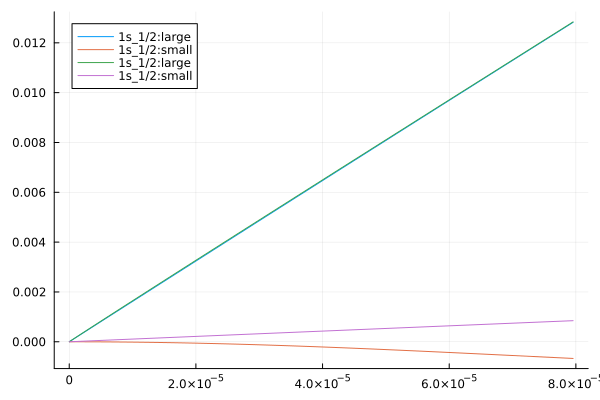
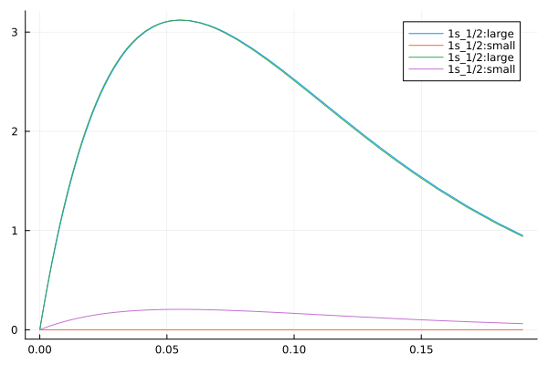
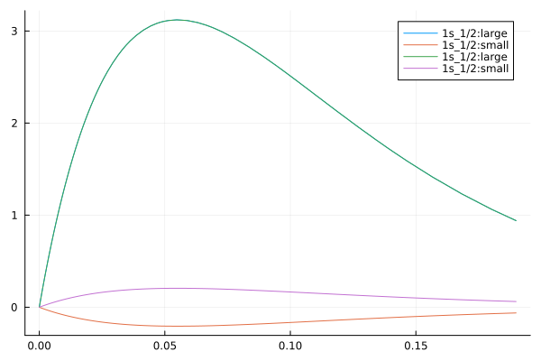

Hydrogenic Computation
using JenaAtomicCalculatorPerhaps, the simplest atomic computations can be made for hydrogenic ions. If we consider, for example, hydrogen-like argon $(Z=18)$, we can first determine and compare the energies of the $1s$ and $2p$ levels from the (non-relativistic) Schroedinger equation with those from Dirac's relativistic equation by
Z = 18.0
e1s = HydrogenicIon.energy(Shell("1s"), Z)-162.0e2p = HydrogenicIon.energy(Shell("2p"), Z)
e2p_1 = HydrogenicIon.energy(Subshell("2p_1/2"), Z)
e2p_3 = HydrogenicIon.energy(Subshell("2p_3/2"), Z)-40.54376720995463While the (one-electron) energies are displayed by the function HydrogenicIon.energy() in the default units (presently eV here and as could be overwritten by the user), all computations are internally performed and returned always in atomic units. This applies to all computations if not stated otherwise in the description of some particular function; indeed, the user-defined units mainly in the tabulation of results but are not returned. Most of these tabulations are generated by display method which print some table to screen but return nothing otherwise.
This clear distinction between the use of atomic and (user-specified) default units can be seen easily from the output of the variables e2p, e2p_1, e2p_3 above:
(e2p, e2p_1, e2p_3)(-40.5, -40.720363843040175, -40.54376720995463)The units of energies, rates and several other physical properties can be however quite easily converted among each other, for instance, by:
e1s_eV = convertUnits("energy: from atomic to eV", e1s)
e1s_au = convertUnits("energy: from eV to atomic", e1s_eV)
(e1s, e1s_eV, e1s_au)(-162.0, -4408.24453524, -162.0)... and similarly also for other energy units as well as for other physical entities; cf. ? convertUnits().
From these energies, we can easily compute the fine-structure splitting of the $2p$ level into the $2p_{1/2}$ and $2p_{3/2}$ (fine-structure) levels for hydrogen-like argon from above:
e13 = e2p_1 - e2p_3
e13_eV = convertUnits("energy: from atomic to eV", e13)-4.805439152723064Apart from the (single-electron) energies, we can generate also the radial orbitals, i.e. the $P(r)$ in the non-relativistic theory or $P(r)$ and $Q(r)$ in the relativistic theory. Both, the relativistic and non-relativistic orbitals, can be calculated by using the general (and analytically well-known) solutions of either the Dirac's or Schrödinger's equation.
However, since all (radial) orbital functions are represented on some Radial.Grid, special care has to be taken in order to define a proper grid, and which affects also all subsequent numerical computations as well as the accuracy that can be obtained. To better understand the definition of the grid, let us ask for:
? Radial.GridJenaAtomicCalculator.Radial.Grid — Type
struct Radial.Grid ... defines a type for the radial grid which contains all information about the grid parameters, the genration of the B-spline basis as well as for performing radial integrations.
** Physical grid parameter **
+ rnt ::Float64 ... smalles grid point > 0.
+ h ::Float64 ... stepsize in the construction of the exponential grid.
+ hp ::Float64 ... asymptotic stepsize of the log-lin grid.
+ NoPoints ::Int64 ... No. of grid points so that r[NoPoints] coincides also
with the largest break point of the B-spline knot.
** B-spline grid parameters and break points **
+ tL ::Array{Float64,1} ... radial break points for the B-splines of the large c.
+ tS ::Array{Float64,1} ... radial break points for the B-splines of the small c.
+ ntL ::Int64 ... number of break points in the t-grid of the large c.
+ ntS ::Int64 ... number of break points in the t-grid of the small c.
+ orderL ::Int64 ... B-spline order of large components.
+ orderS ::Int64 ... B-spline order of small components.
+ nsL ::Int64 ... number of B-splines for large components.
+ nsS ::Int64 ... number of B-splines for small components.
+ orderGL ::Int64
... order of the Gauss-Lengedre integration if mesh == Radial.MeshGL(); this order also determines
the (number of) break points by taking the orderGL-th point from the physical grid points.
** Radial mesh points **
+ meshType ::Radial.AbstractMesh
+ r ::Array{Float64,1} ... radial grid points
+ rp ::Array{Float64,1} ... derivative of the radial grid at the grid points
+ rpor ::Array{Float64,1} ... rp over r
+ wr ::Array{Float64,1}
... integration weights for all grid points, for instance, GL weights.which shows the internal definition and the constructors to define such a grid. In practice, there are three (logical) levels that are considered and realized for each grid:
(i) The phenomenological grid definition that is based on our physics understanding and intuition of which grid is appropriate to decribe a particular atomic property or process. Two currently implemented grid refers to an exponential grid (with exponentially increasing stepsize) as appropriate for many bound-state computations and a linear-logarithmic grid that start exponentially but becomes linear in its stepsize for large values of $r$. Such a linear-logarithmic grid is typically needed to describe electron ionization and capture processes as the incoming or outgoing electron waves are sinusoidal and should be represented with a proper number of grid points, say 20-30, per period of the electron wave. In JAC, the phenomenologically part of the grid is chosen (analogue as in GRASP) by the parameters rnt, h, hp and NoPoints in the definition above.
(ii) The phenomenological definition of the grid is internally translated into a sequence of knots upon which the B-spline primitives are defined. Here, each nth mesh point from the phenomenological is chosen to keep the number of B-splines and the corresponding size of matrices (that need to be diagonalized) moderate. These knots are used to define the B-splines and to determine the eigenvectors of all orbitals (within some given potential) but they are not applied in order evaluate matrix elements or radial integrals.
(iii) The phenomenological grid and the definition of the B-splines (knots) are eventually combined into a physical grid upon which all radial functions are represented. This physical grid resembles the phenomenological grid but with modified grid points in between the knots of the B-spline grid (t-grid). Here the radial points and corresponding weights are chosen due to a Gauss-Legendre distribution and goal to determine all radial integrals exact up to a given Gauss-Legendre order.
The physical grid is thus defined by the three arrays r (the mesh points along $r$), rp (the derivatives d r/ dr), rpor (the values rp / r) as well as w (the corresponding weights). All these arrays are of length nr $\approx$ NoPoints but not necessarely equal as the grid points nr are coupled to the underlying integration, respectively, interpolation scheme.
In principle, this physical grid could chosen also on other interpolation/integration formulas, such as Gauss-Laguerre or others, that have been utilized in atomic physics. All what is needed would be to adapt the intermediate grid point and weights accordingly.
The clear distinction between the phenomenological grid and the physical grid help avoid that every new (radial) operator as well as particular boundary condition of the radial orbital functions need to be treated independently within the B-spline basis. Instead, a proper interpolation/integration formula should guarantee that all results are integrated sufficiently accurate, and this is first of all tested by enlarging the number of grid point NoPoint –> nr
Here, we first apply an exponential grid, and which is appropriate below in order to compute various expectation values:
grid = Radial.Grid(true, printout= true)Radial grid: rnt = 2.0e-6, h = 0.05, hp = 0.0, NoPoints = 392, ntL = 69, ntS = 71, orderL = 7, orderS = 8, nsL = 62, nsS = 63, mesh = JenaAtomicCalculator.Radial.MeshGL(), ...
r: [1.780504510281598e-8, 9.042759120177923e-8, 2.0787030685460475e-7] ... [564.4302351890452, 595.097239730825, 614.0606632064549]
wr: [4.530145586285996e-8, 9.785739473901763e-8, 1.3358660616640612e-7] ... [34.882547080539766, 25.552825070730517, 11.829256033233948]
tS: [0.0, 0.0, 0.0] ... [618.7099715607404, 618.7099715607404, 618.7099715607404]With this grid, the non-relativistic radial orbitals $P(r)$ can be obtained either for a single $r$-value, for a list of $r$-values as well as for all $r$-values on a given radial grid:
Pnr_1s = HydrogenicIon.radialOrbital(Shell("1s"), Z, grid)
Pnr_2p = HydrogenicIon.radialOrbital(Shell("2p"), Z, grid)392-element Vector{Float64}:
8.895323125542194e-14
2.2944426826828984e-12
1.2124385701573003e-11
3.434471347946261e-11
6.787882523004707e-11
1.0416489853450738e-10
1.3047592028166753e-10
1.4891535552172264e-10
2.0078900763041305e-10
3.010512642484143e-10
⋮
0.0
0.0
0.0
0.0
0.0
0.0
0.0
0.0
0.0Here, the exponential tails of the radial orbitals are simply set to zero if $|P| < 1.0e-15$ (and similarly for $|Q|$).
Of course, we could plot the two functions Pnr_1s and Pnr_2p directly by some proper call of PyPlot, and if we give the correct arrays of radial mesh points from above.
using Plots
plot(grid.r, [Pnr_1s, Pnr_2p],xlims=(0,1), xlabel = "r (a.u.)", ylabel="Amplitude (a.u.)", label=["1s" "2p"])GKS: cannot open display - headless operation mode active
We can also make use of this function to visualise the relativistic orbitals if we specify the total angular momentum and generate the relativistic orbitals, which contain both the large and the small component.
setDefaults("standard grid", grid)
PQr_1s = HydrogenicIon.radialOrbital(Subshell("1s_1/2"), Z, grid)
PQr_2p1 = HydrogenicIon.radialOrbital(Subshell("2p_1/2"), Z, grid)
PQr_2p3 = HydrogenicIon.radialOrbital(Subshell("2p_3/2"), Z, grid)
plot(grid.r, [PQr_1s,PQr_2p1, PQr_2p3],xlims=(0,1), xlabel = "r (a.u.)", ylabel="Amplitude (a.u.)",
label=["1s - Large component" "1s - Small component" "2p_1/2 - Large component" "2p_1/2 - Small component" "2p_3/2 - Large component" "2p_3/2 - Small component"])(Re-) Define the standard grid with 392 grid points.
In practice, using Pyplot is often quite tedious since all the specification of arrays, axes, labels, etc. need to be given explicitly. To display the shape of such orbitals, a special plotting method is prepared in JAC that displays one or several orbitals together.
? Basics.plotJenaAtomicCalculator.Basics.plot — Function
Basics.plot(::RadialPotentials, potentials::Array{Radial.Potential,1}, grid::Radial.Grid; N::Int64 = 0) ... to plot one or more radial potentials, where N::Int64 is the number of grid points to be considered. call: using Plots; pyplot() ... to access this method by plot(...)
Basics.plot(::RadialOrbitalsLarge, orbitals::Array{Radial.Orbital,1}, grid::Radial.Grid; N::Int64 = 0) ... to plot the large component of one or more radial orbitals, where N::Int64 is the number of grid points. call: using Plots; pyplot() ... to access this method by plot(...)
Basics.plot(::RadialOrbitalsSmall, orbitals::Array{Radial.Orbital,1}, grid::Radial.Grid; N::Int64 = 0) ... to plot the small component of one or more radial orbitals.
Basics.plot(::RadialOrbitalsBoth, orbitals::Array{Radial.Orbital,1}, grid::Radial.Grid; N::Int64 = 0) ... to plot both the large and small component of one or more radial orbitals.
Basics.plot(theme::AbstractPlotTheme, lines::Array{PhotoEmission.Line,1}) ... to plot transition rates or oscillator strengths as function of transition energies. Not yet implemented.
Basics.plot(theme::AbstractPlotTheme, lines::Array{PhotoEmission.Line,1}, widths::Float64) ... to plot transition rates with Gaussian or Lorentzian broadening. Not yet implemented.
This Basics.plot function (from the Basics module) accepts for instance a list of (relativistic) radial Orbitals:
? OrbitalJenaAtomicCalculator.Radial.Orbital — Type
struct Radial.Orbital ... defines a type for a single-electron radial orbital function with a large and small component, and which can refer to either the standard or an explicitly given grid due to the logical flag useStandardGrid. Bound-state orbitals with energy < 0 are distinguished from free-electron orbitals by the flag isBound.
+ subshell ::Subshell ... Relativistic subshell.
+ isBound ::Bool ... Logical flag to distinguish between bound (true) and free-electron orbitals (false).
+ useStandardGrid ::Bool ... Logical flag for using the standard grid (true) or an explicitly given grid (false).
+ energy ::Float64 ... Single-electron energies of bound orbitals are always negative.
+ P ::Array{Float64,1} ... Large and ..
+ Q ::Array{Float64,1} ... small component of the radial orbital.
+ Pprime ::Array{Float64,1} ... dP/dr.
+ Qprime ::Array{Float64,1} ... dQ/dr.
+ grid ::Array{Float64,1} ... explic. defined radial grid array for P, Q, if StandardGrid = false.Of course, the main purpose of this plot method is to display and compare a number of generated orbitals, either for getting physical insight or just for test purposes. We can make use of the same plot method also for the non-relativistic Pnr_1s$(r)$ orbital if we assign this array as large component of a relativistic orbital and specify the additional quantum numbers. Moreover, we here first internally to define a standard grid as well as such an (instance of the) Orbital by using its standard constructor, and by setting the small $Q(r)$ component as well as $dP/dr$ and $dQ/dr$ simply to zero:
setDefaults("standard grid", grid)
Qnr_1s = Pprime = Qprime = zeros( length(Pnr_1s) )
nrOrb_1s = Orbital( Subshell("1s_1/2"), true, true, e1s, Pnr_1s, Qnr_1s, Pprime, Qprime, Radial.Grid())
typeof(nrOrb_1s)OrbitalWe could also compute a relativistic $1s_{1/2}$ orbital on the given grid and plot the two $1s$-orbitals together; while the large components of these orbitals coincide of course, due to its special construction via the non-relativistic orbitals, the small compoments differ. Note that one need to use the standard REPL in order to display these functions in some separate window.
Orb_1s = HydrogenicIon.radialOrbital(Subshell("1s_1/2"), Z, grid)
e1s_1 = HydrogenicIon.energy(Subshell("1s_1/2"), Z)
rOrb_1s = Orbital( Subshell("1s_1/2"), true, true, e1s_1, Orb_1s[1], Orb_1s[2], Pprime, Qprime, Radial.Grid())Bound-state orbital 1s_1/2 with energy -162.70485811496013 a.u. is defined with 392 (grid) points on the standard grid:
Large component P: [3.094976712530428e-6, 1.5498862894779233e-5, 3.537189759693442e-5, 5.926504419660713e-5, 8.30717237172039e-5, 0.00010271653265137339, 0.00011484727355055586, 0.0001226242231422872, 0.00014220454983176329, 0.00017382034714231485 … 0.0003400832988479155, 0.0003846215960535446, 0.0004384081093685234, 0.0004921362282859167, 0.0005365367822203975, 0.0005639761006343588, 0.0005802444216048941, 0.000619152996620868, 0.0006820292546595882, 0.0007579783496550785] ... [0.0, 0.0, 0.0, 0.0, 0.0, 0.0, 0.0, 0.0, 0.0, 0.0, 0.0]
Small component Q: [2.0415063278116693e-7, 1.0223348868983198e-6, 2.3331985820277163e-6, 3.9092366109110816e-6, 5.479571104502363e-6, 6.7753805878302265e-6, 7.5755476523015185e-6, 8.088530245621624e-6, 9.380086355732164e-6, 1.1465525319036404e-5 … 2.243255026023918e-5, 2.5370382238332118e-5, 2.8918244386660844e-5, 3.246225472790821e-5, 3.5391000894191195e-5, 3.720095125492078e-5, 3.827404108043568e-5, 4.084052572568854e-5, 4.498796496603807e-5, 4.999771374369833e-5] ... [0.0, 0.0, 0.0, 0.0, 0.0, 0.0, 0.0, 0.0, 0.0, 0.0, 0.0]
Pprime: [0.0, 0.0, 0.0, 0.0, 0.0, 0.0, 0.0, 0.0, 0.0, 0.0 … 0.0, 0.0, 0.0, 0.0, 0.0, 0.0, 0.0, 0.0, 0.0, 0.0] ... [0.0, 0.0, 0.0, 0.0, 0.0, 0.0, 0.0, 0.0, 0.0, 0.0, 0.0]
Qprime: [0.0, 0.0, 0.0, 0.0, 0.0, 0.0, 0.0, 0.0, 0.0, 0.0 … 0.0, 0.0, 0.0, 0.0, 0.0, 0.0, 0.0, 0.0, 0.0, 0.0] ... [0.0, 0.0, 0.0, 0.0, 0.0, 0.0, 0.0, 0.0, 0.0, 0.0, 0.0]
Defined on Grid: [1.780504510281598e-8, 9.042759120177923e-8, 2.0787030685460475e-7] ... [527.353759459587, 564.4302351890452, 595.097239730825, 614.0606632064549]
plot(RadialOrbitalsBoth(), Orbital[nrOrb_1s, rOrb_1s], grid; N = 230)
We can use these orbitals to quickly evaluate some overlap integrals and $\langle r^k \rangle$ expectation values; for this, we make use of the non-relativistic $2p$ radial orbital Pnr_2p from above and compute the normalization and $\langle r \rangle$ expectation values:
N_1s = RadialIntegrals.overlap(Pnr_1s, Pnr_1s, grid)
N_2p = RadialIntegrals.overlap(Pnr_2p, Pnr_2p, grid)
r_exp_1s = RadialIntegrals.rkDiagonal(1, Pnr_1s, Pnr_1s,grid)
r_exp_2p = RadialIntegrals.rkDiagonal(1, Pnr_2p, Pnr_2p,grid)
println("N_1s = $(N_1s)","\n","N_2p = $(N_2p)","\n","r_exp_1s = $(r_exp_1s)","\n","r_exp_2p = $(r_exp_2p)")N_1s = 0.999999999999998
N_2p = 0.9999999999999959
r_exp_1s = 0.08333333333333318
r_exp_2p = 0.2777777777777762As we can see the radial orbitals are already normalized by construction and the expectation values match with the analytic values of $\langle r \rangle_{nl} = \frac{1}{2Z}[3n²-l(l+1)]$.
For the sake of simplicity, all hydrogenic computations are performed for a point-like nucleus. For many-electron computations, in constrast, a more realistic nucleus can be taken into accout by selecting a proper nuclear model. See the tutorial: Define the nuclear model parameters or ? Nuclear.Model ... for further details.
? Nuclear.ModelJenaAtomicCalculator.Nuclear.Model — Type
struct Nuclear.Model ... defines a type for the nuclear model, i.e. for its form and parameters.
+ Z ::Float64 ... nuclear charge
+ model ::String ... identifier of the nuclear model: {"Fermi", "Point", "Uniform"}
+ mass ::Float64 ... atomic mass
+ radius ::Float64 ... (root-mean square) radius of a uniform or Fermi-distributed nucleus
+ spinI ::AngularJ64 ... nuclear spin I, must be >= 0
+ mu ::Float64 ... magnetic dipole moment [nuclear magnetons]
+ Q ::Float64 ... electric quadrupole moment [barn]
+ Omega ::Float64 ... magnetic octupole moment [nuclear magnetons x barn]If we would like to compute a relativistic orbital by taking into account the type of the nucleus, we can simply define a nuclear model:
Nucleus = Model(Z, "Fermi")Fermi nuclear model for Z = 18.0 with mass = 37.62, radius R = 3.37121133160794 fm and nuclear spin I = 0, dipole moment mu = 0.0, quadrupole moment Q = 0.0 and octupole moment Omega = 0.0.and set it as an argument value of the radialOrbital-function. By comparing the analytic orbitals which are based on a point like nucleus and the orbitals taking into account a fermi distributed nucleus one can see, that the influence of the nucleus is negligible for large r. However by looking at the functions at a closer angle the influence of the nucleus is well visible for small r.
nuc_orb_1s = HydrogenicIon.radialOrbital(Subshell("1s_1/2"),Nucleus, grid)
plot(RadialOrbitalsBoth(), Orbital[nuc_orb_1s,rOrb_1s], grid; N = 230)
plot(RadialOrbitalsBoth(), Orbital[nuc_orb_1s,rOrb_1s], grid; N = 75)Compute the low-lying levels of $C^{2+} 1s^2 (2s^2 + 2s2p + 2p^2)$: $\;$ SCF and configuration interaction calculations
using JenaAtomicCalculatorThe low-lying levels (level structure) of beryllium-like ions, and especially of C$^{2+}$, has been calculated in many case studies in the literature. While the level structure of these ions is still quite simple, it exhibits a considerable admixture of the $2s^22p^2$ configuration already for the $1s^{2}2s^{2}$ $^{1}S_{0}$ ground level.
We here show how the low-lying levels of C$^{2+}$ can be readily calculated in JAC by either following the default settings or by specifying further details for both, the SCF and configuration-interaction (CI) computations. As usual, we first need to specify a radial grid as well as the nuclear model for the subsequent computations:
grid = Radial.Grid(true)
nucModel = Nuclear.Model(6., "Fermi")Fermi nuclear model for Z = 6.0 with mass = 12.18, radius R = 2.4934845703596404 fm and nuclear spin I = 0, dipole moment mu = 0.0, quadrupole moment Q = 0.0 and octupole moment Omega = 0.0.For a quick computation of the ground level of C$^{2+}$ ions, we can simply use the standard settings as given by AsfSettings():
multiplet = SelfConsistent.performSCF([Configuration("1s^2 2s^2")], nucModel, grid, AsfSettings());
Basics.tabulate(stdout, "multiplet: energies", multiplet, Array(1:length(multiplet.levels)) ) # hide
Basics.tabulate(stdout, "multiplet: energy of each level relative to lowest level", multiplet, Array(1:length(multiplet.levels)) ) # hide... and, similarly, also for the 10 lowest levels of C$^{2+}$ ions as they arise from the $C^{2+} 1s^2 (2s^2 + 2s2p + 2p^2)$ configurations:
multiplet = SelfConsistent.performSCF([Configuration("1s^2 2s^2"), Configuration("1s^2 2s 2p"), Configuration("1s^2 2p^2")],
nucModel, grid, AsfSettings());
Basics.tabulate(stdout, "multiplet: energies", multiplet, Array(1:length(multiplet.levels)) ) # hide
Basics.tabulate(stdout, "multiplet: energy of each level relative to lowest level", multiplet, Array(1:length(multiplet.levels)) ) # hideFrom the comparison of the two ground-state energies, we see that the admixture of the $2p^2$ configuration has lowered the (total) ground state energy by about 1.8 eV, a rather remarkable admixture, as the $\: ^3P_0$ is just 6.6 eV above of the ground level.
Further control about these electronic computations can be obtained by modifying the (so-called) settings. In general, all computations of the electronic structure, properties and processes as well as all more advanced computations can be controlled quite in details by various settings that are associated to the different computational requests. The SCF and configuration interaction calculations are controlled by AsfSettings that specify all details for the generation of the ASF. We can first have a look at the internal representation of these settings:
? AsfSettingsJenaAtomicCalculator.ManyElectron.AsfSettings — Type
struct ManyElectron.AsfSettings ... a struct for defining the settings for the atomic state functions, i.e. the self-consistent-field (SCF) and CI computations
+ generateScf ::Bool ... True, if a SCF need to be generated, and false otherwise
(frozen orbitals).
+ eeInteraction ::AbstractEeInteraction ... Specify the e-e interaction to be included into the SCF
computations.
+ scField ::AbstractScField ... Specify the self-consistent field, for instance,
Basics.ALField(), etc.
+ startScfFrom ::AbstractStartOrbitals ... Specify the orbitals to start the SCF computations
+ maxIterationsScf ::Int64 ... maximum number of SCF iterations
+ accuracyScf ::Float64 ... convergence criterion for the SCF field.
+ shellSequenceScf ::Array{Subshell,1} ... Sequence of subshells to be optimized.
+ frozenSubshells ::Array{Subshell,1} ... Sequence of subshells to be kept frozen.
+ eeInteractionCI ::AbstractEeInteraction ... Specify the e-e interaction to be included into the
CI computations.
+ qedModel ::AbstractQedModel ... model for estimating QED corrections {NoneQed(),
QedPetersburg(), QedSydney()}.
+ jjLS ::LSjjSettings ... settings to control a jj-LS transformation of atomic
level, if requested.
+ levelSelectionCI ::LevelSelection ... Specifies the selected levels, if any.... as well as how the standard settings are presently defined:
defaultAsfSettings = AsfSettings()generateScf: true
eeInteraction: CoulombInteraction()
scField: JenaAtomicCalculator.Basics.DFSField(1.0)
startScfFrom: StartFromHydrogenic()
maxIterationsScf: 24
accuracyScf: 1.0e-6
shellSequenceScf: Subshell[]
frozenSubshells: Subshell[]
eeInteractionCI: CoulombInteraction()
qedModel : NoneQed()
jjLS: false
levelSelectionCI: Inactive LevelSelection.
From this list, we easily see that the self-consistent field is by default based on a (mean) Dirac-Fock-Slater potential, a choice which we could overwrite by meanCH or any pre-defined potential. At present, however, no full treatment of the exchange interaction has yet been implemented in this first release of the program. The standard settings also show that the SCF is usually based on just the lowest level (cf. levelScf) as well as on the accuracy 1.0e-6 to terminate the SCF computations. Moreover, the individual orbitals are improved due to the standard subshell order (cf. shellSequenceScf).
For the CI parameters, the treatment of the Breit and QED interaction is of particular interest. At present, the defaults does not included neither Breit interactions nor QED. Such QED estimates can either be neglected (NoneQed()) or estimated by using an effective Hamiltonian approach due to Shabaev and coworkers (QedPetersburg()) or effective potential approach (QedSydney(); Flambaum et al.) However, further tests need to be done to better understand the reliability of these QED estimates to the level structure and state represetation of the ASF.
As seen from the settings above, moreover, there are special features in order to select individual levels for the CI computations, either in terms of their (relative) level No within the given multiplet or in terms of their level symmetry, i.e. their total angular momentum and parity, respectively. The levelSelectionCI::LevelSelection here tells whether (and which) selections were made; apparently, no selection of level numbers of symmetries is made by default though this can be overwritten. The selection of individual symmetries, in particular, may considerably reduced the computational effort as the Hamiltonian matrix need then to be calculated only for the selected symmetries.
In principle, these standard settings can be easily re-defined within the code by simply modifying the constructor AsfSetings() with no additional arguments. Alternatively, we can easily overwrite those parameters in some given (instance of) AsfSetting which we just wish to modify. This is achieved by
asfSettings = AsfSettings(defaultAsfSettings; generateScf=true, jjLS=LSjjSettings(true),
levelSelectionCI=LevelSelection(true, symmetries=[LevelSymmetry(0,"+"), LevelSymmetry(1,"-")]) )generateScf: true
eeInteraction: CoulombInteraction()
scField: JenaAtomicCalculator.Basics.DFSField(1.0)
startScfFrom: StartFromHydrogenic()
maxIterationsScf: 24
accuracyScf: 1.0e-6
shellSequenceScf: Subshell[]
frozenSubshells: Subshell[]
eeInteractionCI: CoulombInteraction()
qedModel : NoneQed()
jjLS: true
levelSelectionCI: LevelSelection: indices = Int64[]; symmetries = LevelSymmetry[0 +, 1 -].
multiplet = SelfConsistent.performSCF([Configuration("1s^2 2s^2"), Configuration("1s^2 2s 2p"),
Configuration("1s^2 2p^2"), Configuration("1s^2 3s^2"),
Configuration("1s^2 3p^2")], nucModel, grid, asfSettings);
Basics.tabulate(stdout, "multiplet: energies", multiplet, Array(1:length(multiplet.levels)) ) # hide
Basics.tabulate(stdout, "multiplet: energy of each level relative to lowest level", multiplet, Array(1:length(multiplet.levels)) ) # hideWe finish this (simple) tutorial by enlarging the configuration basis for the low-lying levels but by restricting the CI computations to the level symmetries $J^P = 0^+$ and $1^-$. This is achieved by specifying the settings to: